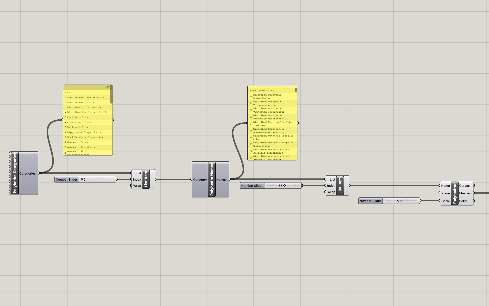
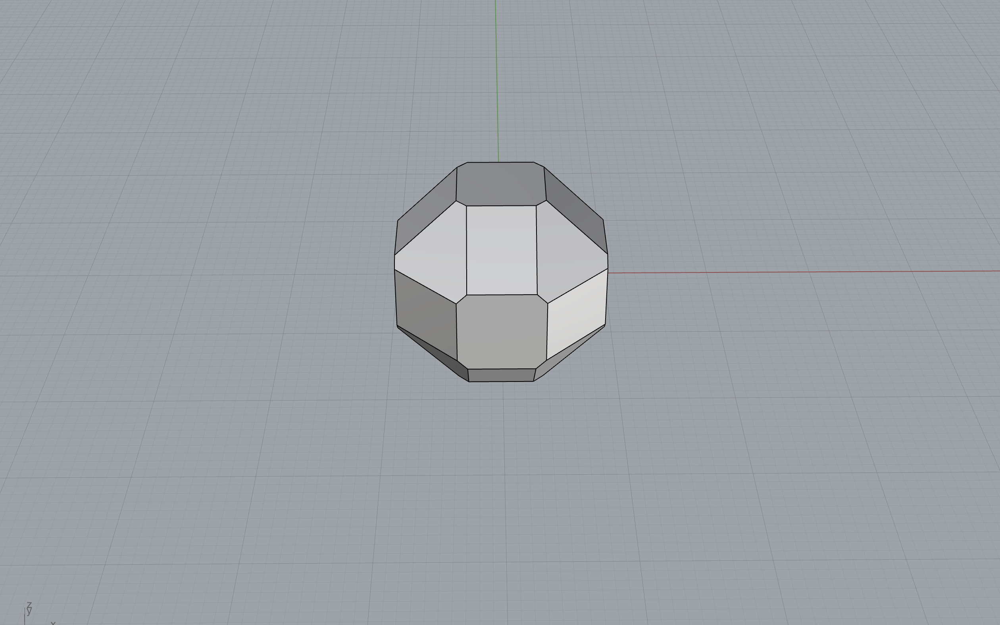
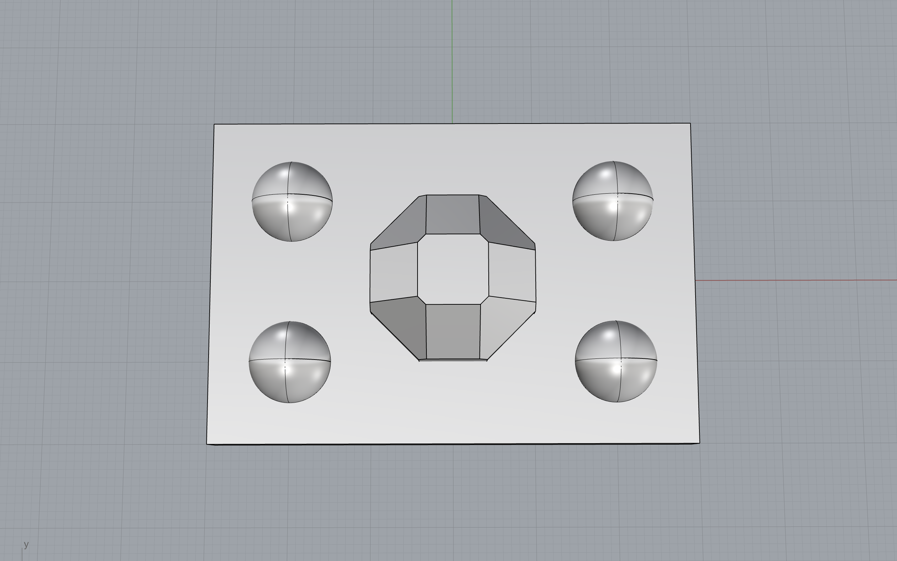
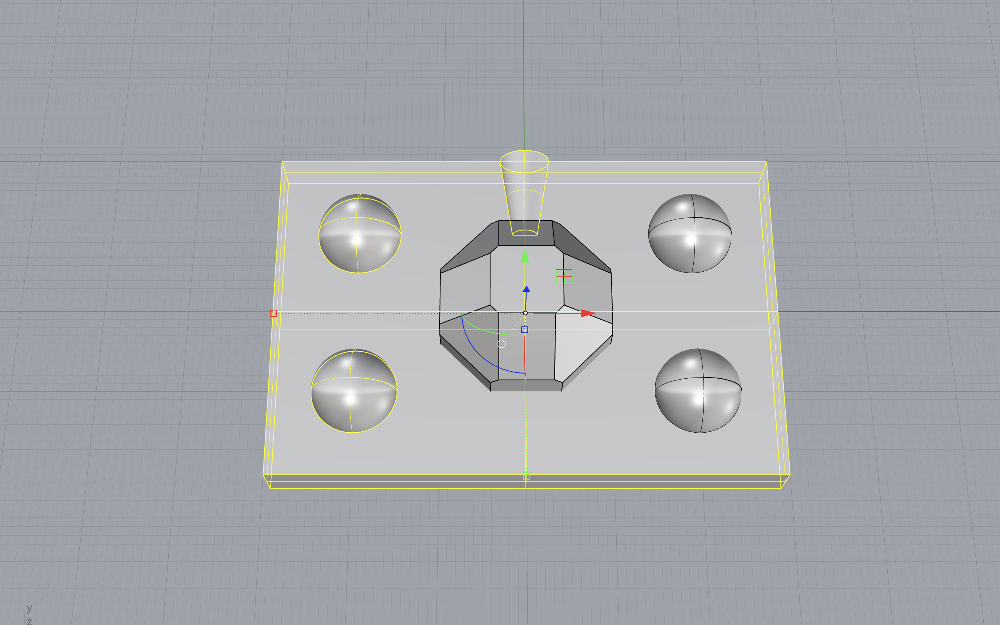
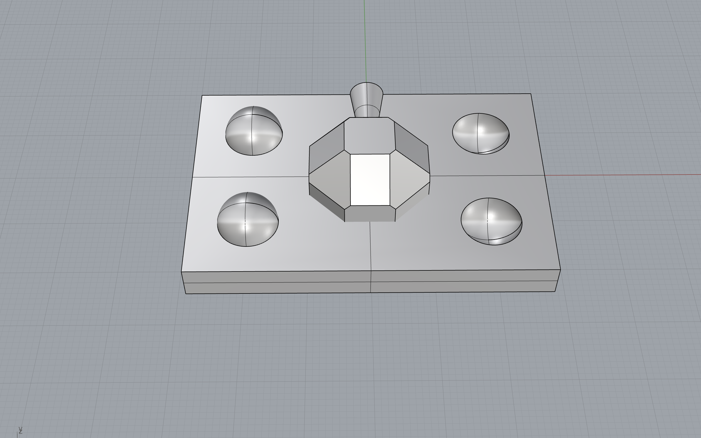
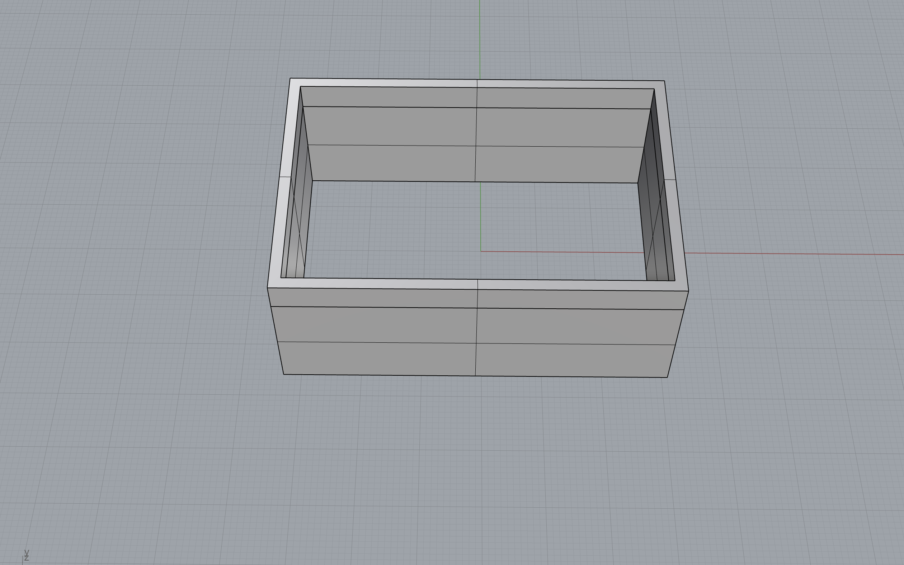

Assignment 6: Lamps Part 2! and Molding and Casting Part 2!
Jessica Douma | HCDE 533 | Autumn 2022

Lamps - Part 2
I made a lot of progress last week that made finishing up my lamp this week really straight forward. All I had left to do was print each layer of the leaves and finish designing (and then print) the base of the lamp
Using my Grasshopper model from last week I followed the following steps in Rhino to complete each layer of leaves:
- Bake each of my four different leaves into different layers in Rhino. Moving each of the different leaves into separate layers made it a lot easier to edit each one and visualize them all together by turning the visibility of each layer on and/or off.
- Copy and paste each leaf, moving the duplicate up 2 in the Z direction and over -2 in the Y direction.
- Combine the original and duplicate leaf via the DevLoft command to create a solid.
- Create a polar array of each leaf to include five leaves.
- Create a tube that is 5mm tall, that connects all the leaves in one layer and has a hole in the middle so that it can be slid over the light bulb.
- BooleanUnion the five leaves to create onfe solid that could be exported to an STL to be printed.
I decided to print each layer of leaves individually (rather than unioning them into one final object) due to printing time. Each individual layer took between 10 and 14 hours to print. If I printed the entire lamp shade as one object, the print would have taken 2 days and 8 hours. I opted against this, because if I got 90% through the print and had an issue at the very end, I would have to restart the entire thing (and may not have enough time at that point). So I decided to print each individually, such that they could be stacked, so that if I had issues with one layer, the other layers wouldn't be set back. While I didn't end up having an issues (I finally fixed my thermal runaway issues yay!). I do still think that this was the right decision given the printer I have.
Next, came finishing the desing of my base. Last week I already created the part of the base that the cord could be strung through and the lightbulb could sit in. Now I just had to design the rest of the base that would contain that piece. Since I had decided on a table lamp, I wanted a cylinder that the leaves would sit on top of, that could sit flat on the table (and therefore needed a slot for the cord to come out of). I went through the following steps in Rhino to create the base:
- Create a cylinder with a 95mm diameter.
- Create a second cylinder with a 91mm diameter. This cylinder was 1mm wider than the tube holding together the base of the leaves.
- Use the smaller cylinder to create a lip in larger cylinder with the BooleanSplit command. The lip was added so that the bottom layer of the leaves would sit inside the cylinder so that it wouldn't be able to slide off.
- Use the smaller cylinder again to remove most of the inside of the larger cylinder. I did this so that my final solid would take less time to print.
- Next, I used the piece I already designed, intended to hold the lightbulb, to cut a hole in the top of the base (via BooleanSplit) and then combined the piece to the rest of teh cylinder via BooleanUnion
- Lastly, I drew a small cylinder, wide enough to fit the cord, and used it to cut a hole out of the bottom of the base.
I printed each piece of my lamp consecutively for three days and didn't have any issue with any piece. I was really happy with the final result and one of my friends even claimed the lamp for her work desk. While I was super happy with the results two things I would do differently for next time are:
- Print the leaves with 100% infill since I used a translucent PLA. I didn't mind the infill pattern that shined through the leaves but I would have preffered them without. My friend actually preferred the infill pattern since it added texture to the final piece. So while I think this is largely up to preference, I think the final piece would look better without the cross sections.
- I would add a mechanism so that each layer of the leaves snapped or could be held into place when stacked. Currently each layer can be turned, and the layer's alignment can be changed. If I add half a sphere to the top of each tube, and subtracted half a sphere from the bottom of each tube the leaves were connected to, then the leaves wouldn't be able to rotate and their alignment wouldn't be able to shift.
- After presenting my progress last week and manually lofting the leaves, I realized that I could in fact extrude them in Grasshopper. I couldn't get it working the first time since I was extruding the surface along the Y axis in the wrong direction. It wasn't until I wen through the process of manually lofting the leaves myself and explaining my process to someone out loud that I realized the mistake. I would update my model to include this correction for next time.
Molding and Casting - Part 1
For this part of the assignment, we had to 3D print our mold for a mold - meta. I started by designing the piece I wanted to cast next week. I decided I wanted to do a symmetrical polyhedron since it was more fun than a sphere but still a relatively simple shape. Because it was symmetrical, I also only had to create one mold as opposed to two. I went through the following steps to create my mold:

1. I downloaded the RhinoPolyhedra Grasshopper package to easily create a polyhedron. |

2. In Grasshopper, I used the RhinoPolyhedra Polyhedron component to create the shape. The component showed that I need to choose a 'Name'. Adding the Polyhedron Name component, showed me I needed to specify a 'Polyhedron Category'. |

3. Both the category and name components provided a list. I used the List Item component and a number slider to be able to select an option. While the number slider easily let me scroll through the different shape options, I wanted to know what the actual options were, so I also connected the lists to a panel component so that I could read all the outputs. |
|

4. I scrolled through the different options I chose a shape that was symmetrical and had a flat edge for the sprue to connect to. I specified the scale of the shape and baked it. |

5. Next I added four spheres around the polyhedron that would be used as the keys for the mold. I decided on a 10mm diameter for each one since I really wanted the molds to lock together well, and since the spheres would be cut in half, this meant that only 5mm of it would be used in the actual mold. |

6. Next, I added a box around the objects such that it was at least 5mm wider in every direction of a shape being molded. I wanted to make sure the walls of my mold were thick enough so that the silicone mold wouldn't be too flexible when I went to cast my final object. |

7. Next, I drew a truncated cone that would serve as the pouring hole and positioned it such that it was flush withe polyhedron and extended to the edge of the box. |

8. Using the command BooleanUnion, I combined two of the spheres and the pouring hole to the box. |

9. Using the command BooleanSplit, I removed two of the spheres from the box to make the key holes. |

10. Next, I tried to union the polyhedron with the resulting box but was having a lot of issues since the polyhedron was a mesh and wasn't unioning correctly. So I used the MeshToNURB command on the polyhedron to convert it to a solid and unioned that with the box. |

11. To create the outer wall for the mold, I created two boxes; one that was .1mm wider and longer than the mold base I just created, and another that was 2mm wider and longer than the mold base. Both boxes were also 15mm taller than the highest point of the mold base to ensure the bottom of the silicone mold would be thick enough. I used the BooleanSplit command to remove the smaller box from the larger box. |
12. I then printed the pieces to ensure that the base of the mold slid into the mold wall without any gaps and success! I printed one more 3D mold so that I could pour and cure both halves of the mold at the same time. |
After printing the 3D mold, I was worried that the pouring hole was too small... So I designed a second version of the mold with a slightly larger pour hole and printed two more molds so that they would be ready to go for next week.
Source Files
Lamp Source Files
Grasshopper file for generating leaves
Rhino model of leaves
Rhino model of lamp base
Molding and Casting Source Files
Grasshopper file for generating polyhedrons
Rhino model of mold
Acknowledgements
Emily Rowland for helping me think through the mold part of the assignment.